pacman::p_load(igraph, tidygraph, ggraph,
visNetwork, lubridate, clock,
tidyverse, graphlayouts,
concaveman, ggforce)Hands-on_Ex07A
This exercise is about learning to model, analyse and visualise network data using R.
Learning objectives:
create graph object data frames
build network graph visualisation
compute network geometrics
build advanced graph visualisation by incorporating the network geometrics
build interactive network visualisation
Getting started
Data
2 datasets are being used. One is containing nodes data while other contains edge(aka link) data.
GAStech_nodes <- read_csv("GAStech_email_node.csv")
GAStech_edges <- read_csv("GAStech_email_edge-v2.csv")Reviewing imported data
Rows: 9,063
Columns: 8
$ source <dbl> 43, 43, 44, 44, 44, 44, 44, 44, 44, 44, 44, 44, 26, 26, 26…
$ target <dbl> 41, 40, 51, 52, 53, 45, 44, 46, 48, 49, 47, 54, 27, 28, 29…
$ SentDate <chr> "6/1/2014", "6/1/2014", "6/1/2014", "6/1/2014", "6/1/2014"…
$ SentTime <time> 08:39:00, 08:39:00, 08:58:00, 08:58:00, 08:58:00, 08:58:0…
$ Subject <chr> "GT-SeismicProcessorPro Bug Report", "GT-SeismicProcessorP…
$ MainSubject <chr> "Work related", "Work related", "Work related", "Work rela…
$ sourceLabel <chr> "Sven.Flecha", "Sven.Flecha", "Kanon.Herrero", "Kanon.Herr…
$ targetLabel <chr> "Isak.Baza", "Lucas.Alcazar", "Felix.Resumir", "Hideki.Coc…glimpse(GAStech_edges)Wrangling time
GAStech_edges <- GAStech_edges %>%
mutate(SendDate = dmy(SentDate)) %>%
mutate(Weekday = wday(SentDate,
label = TRUE,
abbr = FALSE))Wrangling attributes
GAStech_edges_aggregated <- GAStech_edges %>%
filter(MainSubject == "Work related") %>%
group_by(source, target, Weekday) %>%
summarise(Weight = n()) %>%
filter(source!=target) %>%
filter(Weight > 1) %>%
ungroup()Creating network objects using tidygraph
2 articles for reading:
https://www.data-imaginist.com/posts/2017-07-07-introducing-tidygraph/
https://www.data-imaginist.com/posts/2018-02-12-tidygraph-1-1-a-tidy-hope/index.html
Main learning points:
tidygraph is for network/graph analysis in a tidyverse style. Instead of treating network data as one messy structure, it represents it as 2 tidy tables.
Nodes table. This contains people, entities, items
Edges table. This represents relationships/connections between them.
tbl_graph is the main graph object. It is built on top of igraph, so it can use graph algorithms efficiently, but it is displayed and manipulated like tidy data.
activate() switches between nodes and edges. There is a need to tell R whether now it is working on nodes and edges. activate(nodes) means apply subsequent adplyr verbs to node data, whole activate(edges) means they apply to edge data.
tidygraph helps answer network questions, not just draw networks. An important point from the second article is that you do not need to plot a network to understand it.
Centrality identifies important nodes. This can be used to help identify key actors in the communication/event network.
Community detection groups related nodes. These detect groups of nodes that are more strongly connected to each other. This is useful for finding clusters of people, departments or suspicious communication groups.
Morphing allows temporary graph transformation, using functions like morph(), convert().
Overall, the main lesson is that tidygraph lets you treat network data like tidy data. Therefore, networks can be represented as nodes and edges. More importantly, it helps you perform meaningful network analysis using centrality, community detection, path analysis and graph measures before visualising the results with ggraph.
Now, we will build tidygraph data model.
# A tbl_graph: 54 nodes and 1372 edges
#
# A directed multigraph with 1 component
#
# Node Data: 54 × 4 (active)
id label Department Title
<dbl> <chr> <chr> <chr>
1 1 Mat.Bramar Administration Assistant to CEO
2 2 Anda.Ribera Administration Assistant to CFO
3 3 Rachel.Pantanal Administration Assistant to CIO
4 4 Linda.Lagos Administration Assistant to COO
5 5 Ruscella.Mies.Haber Administration Assistant to Engineering Group Mana…
6 6 Carla.Forluniau Administration Assistant to IT Group Manager
7 7 Cornelia.Lais Administration Assistant to Security Group Manager
8 44 Kanon.Herrero Security Badging Office
9 45 Varja.Lagos Security Badging Office
10 46 Stenig.Fusil Security Building Control
# ℹ 44 more rows
#
# Edge Data: 1,372 × 4
from to Weekday Weight
<int> <int> <ord> <int>
1 1 2 Sunday 5
2 1 2 Monday 2
3 1 2 Tuesday 3
# ℹ 1,369 more rowsGAStech_graph <- tbl_graph(nodes = GAStech_nodes,
edges = GAStech_edges_aggregated,
directed = TRUE)
GAStech_graphReviewing output of the graph object
The output shows that GAStech_graph is an object representing a directed multigraph consisting of 54 nodes and 1372 edges. Each node represents an employee and contains 4 attributes: id, label, department and job title. The edge data captures interactions between employees, where the from and to columns indicate the source and destination nodes respectively. Each edge has a weekday attribute and weight attribute which represents the frequency or strength of interaction between the 2 employees that day. As the graph is a directed multigraph, multiple directed edges can exist between the same pair of employees, allowing interactions on different weekdays to be represented separately.
Changing the active object
# A tbl_graph: 54 nodes and 1372 edges
#
# A directed multigraph with 1 component
#
# Edge Data: 1,372 × 4 (active)
from to Weekday Weight
<int> <int> <ord> <int>
1 40 41 Saturday 13
2 41 43 Monday 11
3 35 31 Tuesday 10
4 40 41 Monday 10
5 40 43 Monday 10
6 36 32 Sunday 9
7 40 43 Saturday 9
8 41 40 Monday 9
9 19 15 Wednesday 8
10 35 38 Tuesday 8
# ℹ 1,362 more rows
#
# Node Data: 54 × 4
id label Department Title
<dbl> <chr> <chr> <chr>
1 1 Mat.Bramar Administration Assistant to CEO
2 2 Anda.Ribera Administration Assistant to CFO
3 3 Rachel.Pantanal Administration Assistant to CIO
# ℹ 51 more rowsGAStech_graph %>%
activate(edges) %>%
arrange(desc(Weight))Plotting static network graphs

ggraph(GAStech_graph) +
geom_edge_link() +
geom_node_point()Changing default network graph theme

g <- ggraph(GAStech_graph) +
geom_edge_link(aes()) +
geom_node_point(aes())
g + theme_graph()Changing the color

g <- ggraph(GAStech_graph) +
geom_edge_link(aes(colour = 'grey50')) +
geom_node_point(aes(colour = 'grey40'))
g + theme_graph(background = 'grey10',
text_colour = 'white')changing the layouts
library(tibble)
library(knitr)
layout_table <- tibble(
Layout = c(
"nicely", "fr", "kk", "lgl", "drl",
"graphopt", "gem", "mds", "circle",
"star", "grid", "randomly", "sphere", "dh"
),
Purpose = c(
"Default layout",
"Force-directed",
"Force-directed emphasizing distances",
"Large graph layout",
"Distributed recursive layout",
"Energy-based optimization",
"Force-directed",
"Multidimensional scaling",
"Circular arrangement",
"Hub-and-spoke structures",
"Rarely used for analysis",
"Random baseline",
"3D-like representation",
"Davidson-Harel force-directed"
),
`When to Use` = c(
"General exploration",
"Most common for social networks",
"Small-medium networks",
"Large networks (1000+ nodes)",
"Very large networks",
"Alternative to FR",
"Alternative visualization",
"Distance/similarity networks",
"Showing sequences/groups",
"Hub-centered networks",
"Rarely used",
"Baseline comparison",
"Special visualizations",
"Alternative force-directed layout"
)
)
kable(
layout_table,
caption = "Common ggraph Layouts and Their Uses"
)| Layout | Purpose | When to Use |
|---|---|---|
| nicely | Default layout | General exploration |
| fr | Force-directed | Most common for social networks |
| kk | Force-directed emphasizing distances | Small-medium networks |
| lgl | Large graph layout | Large networks (1000+ nodes) |
| drl | Distributed recursive layout | Very large networks |
| graphopt | Energy-based optimization | Alternative to FR |
| gem | Force-directed | Alternative visualization |
| mds | Multidimensional scaling | Distance/similarity networks |
| circle | Circular arrangement | Showing sequences/groups |
| star | Hub-and-spoke structures | Hub-centered networks |
| grid | Rarely used for analysis | Rarely used |
| randomly | Random baseline | Baseline comparison |
| sphere | 3D-like representation | Special visualizations |
| dh | Davidson-Harel force-directed | Alternative force-directed layout |
Using the Fruchterman and Reingold layout
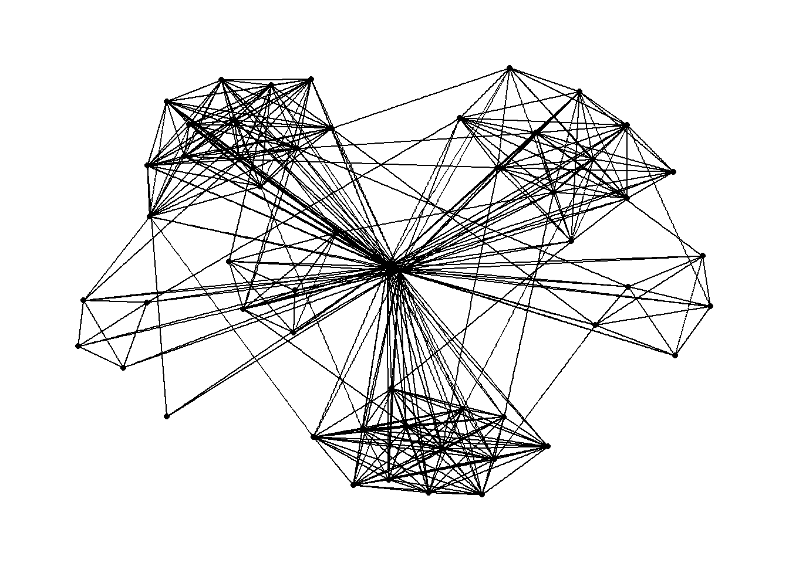
g <- ggraph(GAStech_graph,
layout = "fr") +
geom_edge_link(aes()) +
geom_node_point(aes())
g + theme_graph()Modifying network nodes
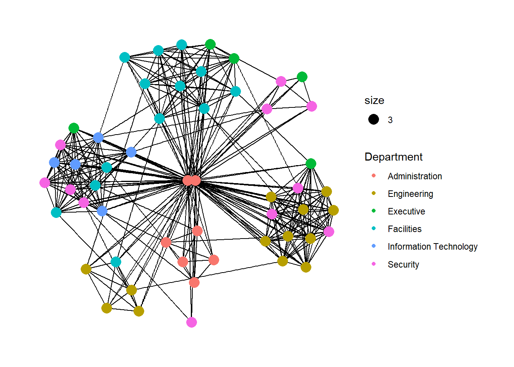
g <- ggraph(GAStech_graph,
layout = "nicely") +
geom_edge_link(aes()) +
geom_node_point(aes(colour = Department,
size = 3))
g + theme_graph()Modifying edges
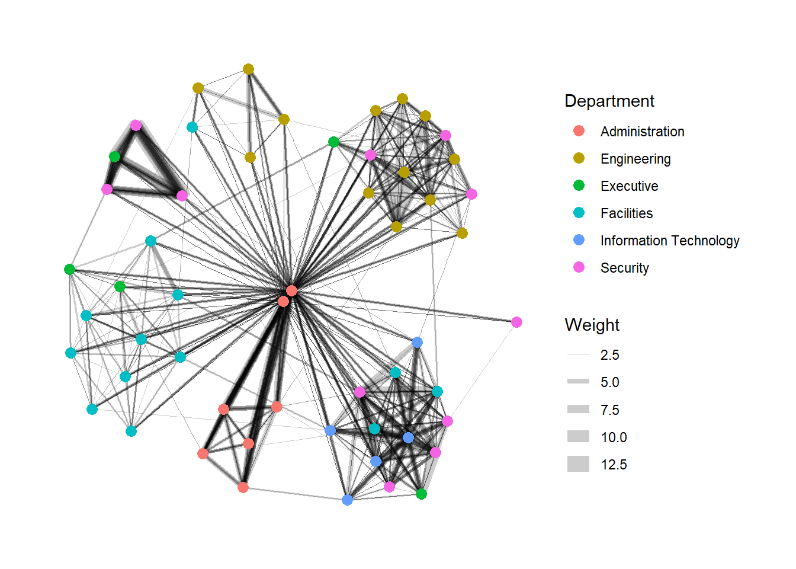
g <- ggraph(GAStech_graph,
layout = "nicely") +
geom_edge_link(aes(width=Weight),
alpha=0.2) +
scale_edge_width(range = c(0.1, 5)) +
geom_node_point(aes(colour = Department),
size = 3)
g + theme_graph()Creating facet graphs
Faceting in ggraph is a technique used to split a network visualisation into multiple panels based on node or edge attributes. This helps reduce edge overplotting and makes complex network structures easier to interpret.
The 3 main faceting functions are: 1. facet_nodes() 2. facet_edges() 3. facet_graph()
Why faceting is useful: Faceting offers several advantages when analysing network data: 1. reduces visual clutter 2. highlights patterns 3. facilitates comparison 4. improves interpretability
A common mistake is to repeatedly filter the network and create separate plots.
| Filtering | Faceting |
|---|---|
| Produces separate plots | Produces a coordinated set of panels |
| Layout may change between plots | Layout remains consistent |
| Harder to compare | Easier to compare |
| More code required | More concise |
facet_edges()
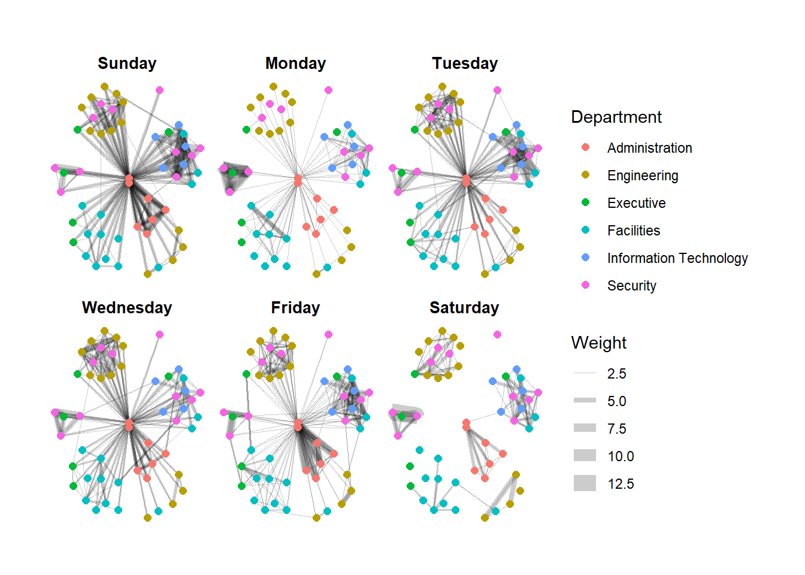
set_graph_style()
g <- ggraph(GAStech_graph,
layout = "nicely") +
geom_edge_link(aes(width=Weight),
alpha=0.2) +
scale_edge_width(range = c(0.1, 5)) +
geom_node_point(aes(colour = Department),
size = 2)
g + facet_edges(~Weekday)theme()
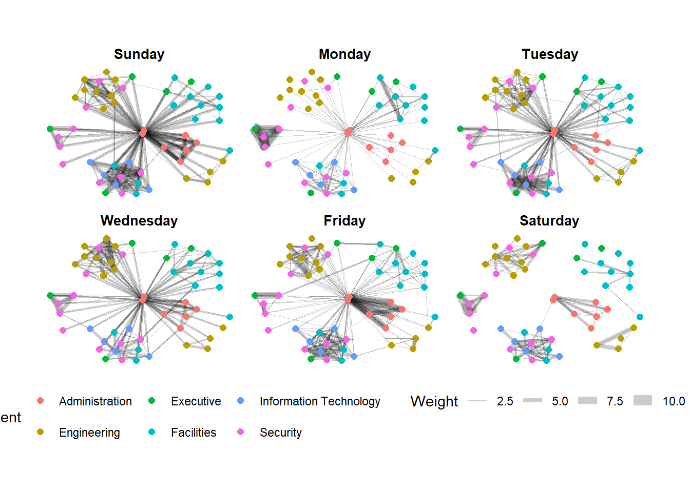
set_graph_style()
g <- ggraph(GAStech_graph,
layout = "nicely") +
geom_edge_link(aes(width=Weight),
alpha=0.2) +
scale_edge_width(range = c(0.1, 5)) +
geom_node_point(aes(colour = Department),
size = 2) +
theme(legend.position = 'bottom')
g + facet_edges(~Weekday)set_graph_style()
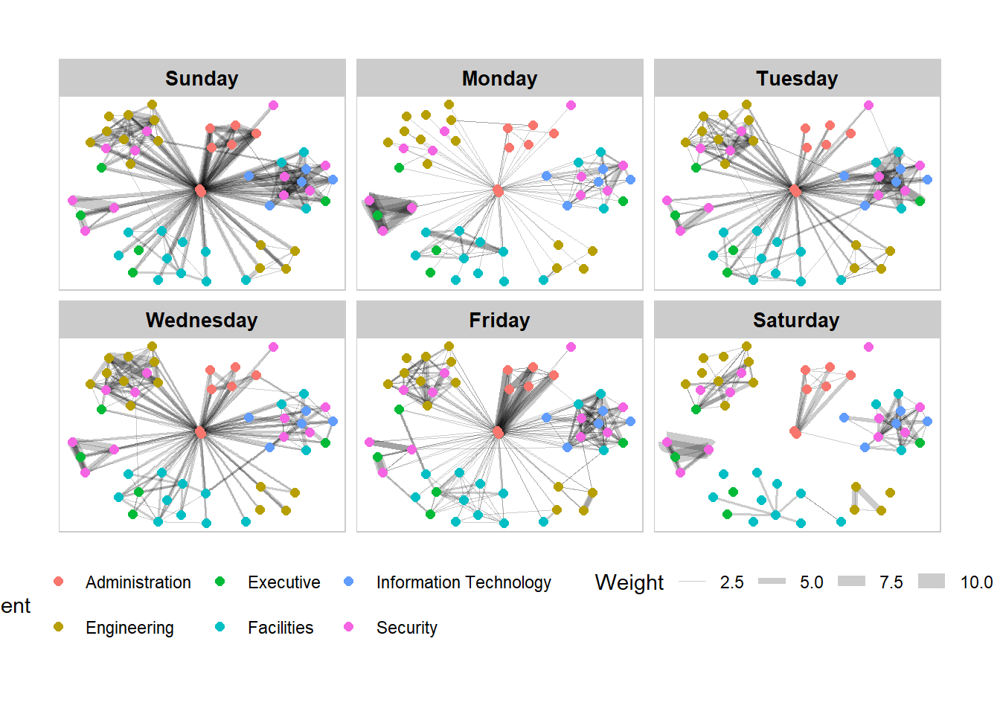
set_graph_style()
g <- ggraph(GAStech_graph,
layout = "nicely") +
geom_edge_link(aes(width=Weight),
alpha=0.2) +
scale_edge_width(range = c(0.1, 5)) +
geom_node_point(aes(colour = Department),
size = 2)
g + facet_edges(~Weekday) +
th_foreground(foreground = "grey80",
border = TRUE) +
theme(legend.position = 'bottom')facet_nodes()
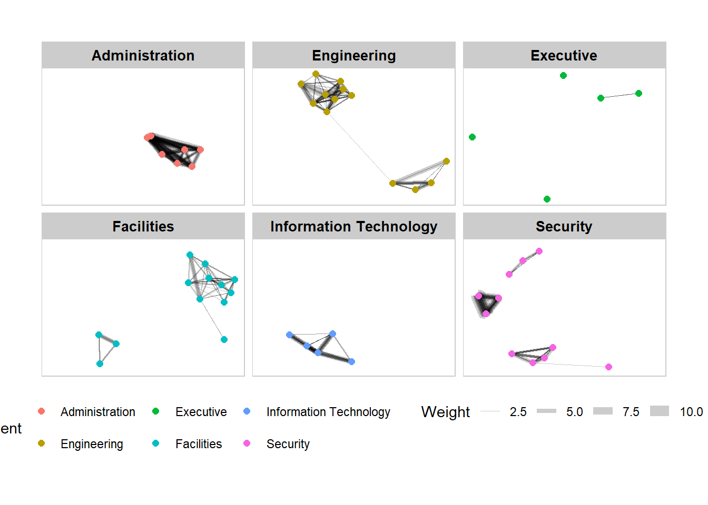
set_graph_style()
g <- ggraph(GAStech_graph,
layout = "nicely") +
geom_edge_link(aes(width=Weight),
alpha=0.2) +
scale_edge_width(range = c(0.1, 5)) +
geom_node_point(aes(colour = Department),
size = 2)
g + facet_nodes(~Department)+
th_foreground(foreground = "grey80",
border = TRUE) +
theme(legend.position = 'bottom')Network Metrics analysis
What is centrality? Centrality measures are network analysis metrics that quantify how important, influential or strategically positioned a node is within a network. Different measures capture different aspects of importance, so a node that ranks highly on one metric may not highly on another.
Degree centrality: Degree centrality measures the number of direct connections a node has.
Betweenness centrality: Betweenness centrality measures how frequently a node lies on the shortest paths between other nodes.
Closenes centrality: Closeness centrality measures how close a node is to all other nodes in the network based on shortest path distances.
Eigenvector centrality: Eigenvector centrality extends degree centrality by considering not only how many connections a node has, but also how important those connections are.
| Measure | Captures | High Score Indicates |
|---|---|---|
| Degree | Direct connections | Highly connected |
| Betweenness | Control of paths | Broker or bridge |
| Closeness | Distance to others | Efficient communicator |
| Eigenvector | Connection quality | Influential or prestigious |
Insights: The “most connected” person is not always the most important. A node can have high degree and low betweenness,if it communicates with many people inside a single department. A node can have lower degree and higher betweenness, if it serves as the only bridge between departments.
| Question | Recommended Metric |
|---|---|
| Who talks to the most people? | Degree |
| Who connects different groups? | Betweenness |
| Who can spread information fastest? | Closeness |
| Who is connected to influential people? | Eigenvector |
Computing centrality indices
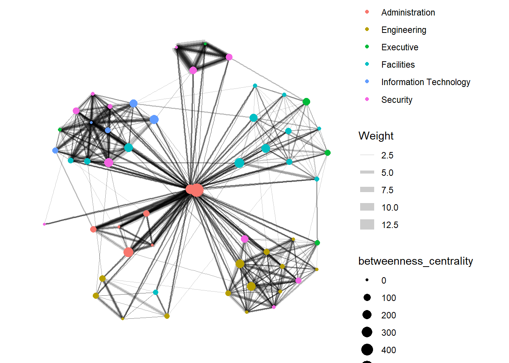
g <- GAStech_graph %>%
mutate(betweenness_centrality = centrality_betweenness()) %>%
ggraph(layout = "fr") +
geom_edge_link(aes(width=Weight),
alpha=0.2) +
scale_edge_width(range = c(0.1, 5)) +
geom_node_point(aes(colour = Department,
size=betweenness_centrality))
g + theme_graph()visualising network metrics
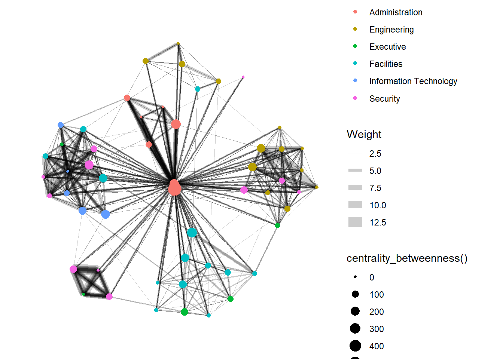
g <- GAStech_graph %>%
ggraph(layout = "fr") +
geom_edge_link(aes(width=Weight),
alpha=0.2) +
scale_edge_width(range = c(0.1, 5)) +
geom_node_point(aes(colour = Department,
size = centrality_betweenness()))
g + theme_graph()Visualising community
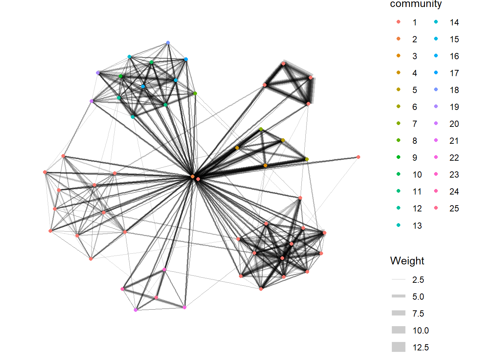
g <- GAStech_graph %>%
mutate(community = as.factor(
group_edge_betweenness(
weights = Weight,
directed = TRUE))) %>%
ggraph(layout = "fr") +
geom_edge_link(
aes(
width=Weight),
alpha=0.2) +
scale_edge_width(
range = c(0.1, 5)) +
geom_node_point(
aes(colour = community))
g + theme_graph()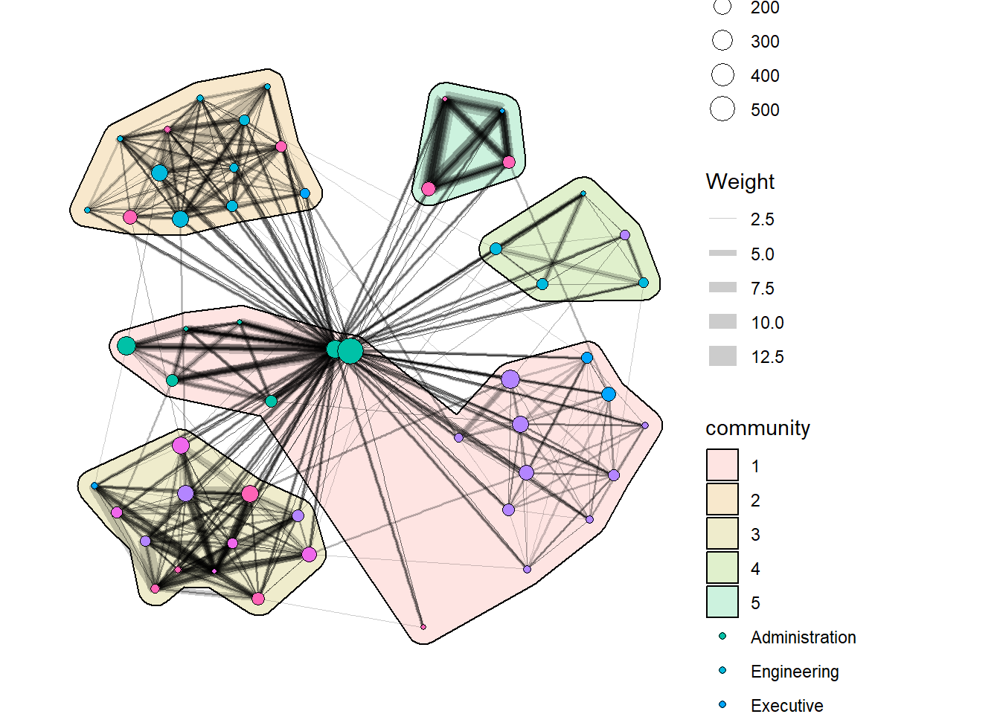
g <- GAStech_graph %>%
activate(nodes) %>%
mutate(community = as.factor(
group_optimal(weights = Weight)),
betweenness_measure = centrality_betweenness()) %>%
ggraph(layout = "fr") +
geom_mark_hull(
aes(x, y,
group = community,
fill = community),
alpha = 0.2,
expand = unit(0.3, "cm"), # Expand
radius = unit(0.3, "cm") # Smoothness
) +
geom_edge_link(aes(width=Weight),
alpha=0.2) +
scale_edge_width(range = c(0.1, 5)) +
geom_node_point(aes(fill = Department,
size = betweenness_measure),
color = "black",
shape = 21)
g + theme_graph()Building interactive network graph with visNetwork
Data preparation
GAStech_edges_aggregated <- GAStech_edges %>%
left_join(GAStech_nodes, by = c("sourceLabel" = "label")) %>%
rename(from = id) %>%
left_join(GAStech_nodes, by = c("targetLabel" = "label")) %>%
rename(to = id) %>%
filter(MainSubject == "Work related") %>%
group_by(from, to) %>%
summarise(weight = n()) %>%
filter(from!=to) %>%
filter(weight > 1) %>%
ungroup()Plotting the first interactive network graph
visNetwork(GAStech_nodes,
GAStech_edges_aggregated)Working with layout
visNetwork(GAStech_nodes,
GAStech_edges_aggregated) %>%
visIgraphLayout(layout = "layout_with_fr") Working with visual attributes
GAStech_nodes <- GAStech_nodes %>%
rename(group = Department) Assigning colours
visNetwork(GAStech_nodes,
GAStech_edges_aggregated) %>%
visIgraphLayout(layout = "layout_with_fr") %>%
visLegend() %>%
visLayout(randomSeed = 123)visual attributes - edges
visNetwork(GAStech_nodes,
GAStech_edges_aggregated) %>%
visIgraphLayout(layout = "layout_with_fr") %>%
visEdges(arrows = "to",
smooth = list(enabled = TRUE,
type = "curvedCW")) %>%
visLegend() %>%
visLayout(randomSeed = 123)Interactivity
visNetwork(GAStech_nodes,
GAStech_edges_aggregated) %>%
visIgraphLayout(layout = "layout_with_fr") %>%
visOptions(highlightNearest = TRUE,
nodesIdSelection = TRUE) %>%
visLegend() %>%
visLayout(randomSeed = 123)Alternatives
Arc diagram
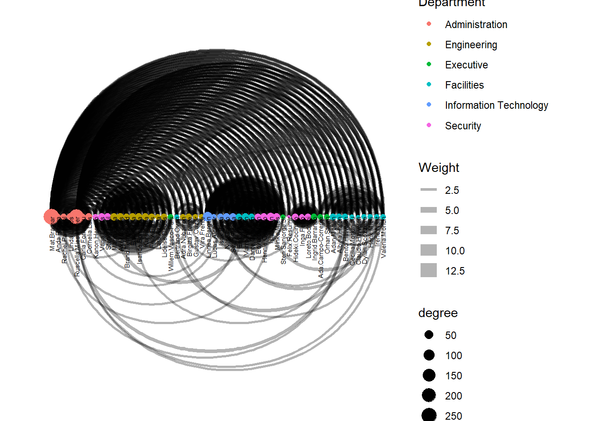
library(ggraph)
GAStech_graph %>%
activate(nodes) %>%
mutate(
degree = centrality_degree()
) %>%
ggraph(layout = "linear") +
geom_edge_arc(
aes(width = Weight),
alpha = 0.3
) +
geom_node_point(
aes(size = degree,
colour = Department)
) +
geom_node_text(
aes(label = label),
angle = 90,
hjust = 1,
size = 2
) +
theme_graph()Communication appears to be highly concentrated around a small number of employees, indicating a hub-and-spoke network structure rather than evenly distributed interactions.
Hive plot (ggraph)
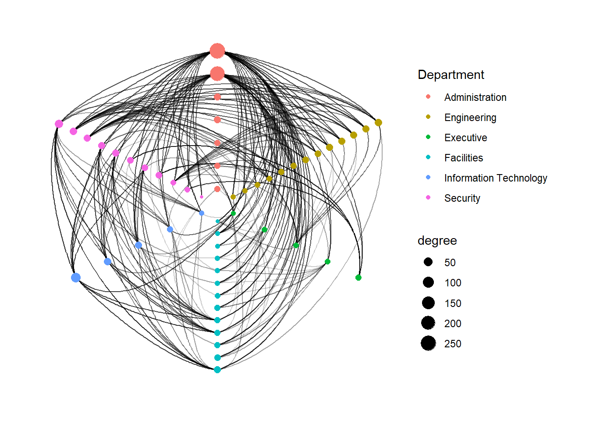
library(ggraph)
GAStech_graph %>%
activate(nodes) %>%
mutate(
degree = centrality_degree()
) %>%
ggraph(
layout = "hive",
axis = Department,
sort.by = degree
) +
geom_edge_hive(
alpha = 0.2
) +
geom_node_point(
aes(size = degree,
colour = Department)
) +
theme_graph()Communication occurs extensively across departments rather than remaining within specific departments, indicating a highly interconnected organisation.
Matrix network plot
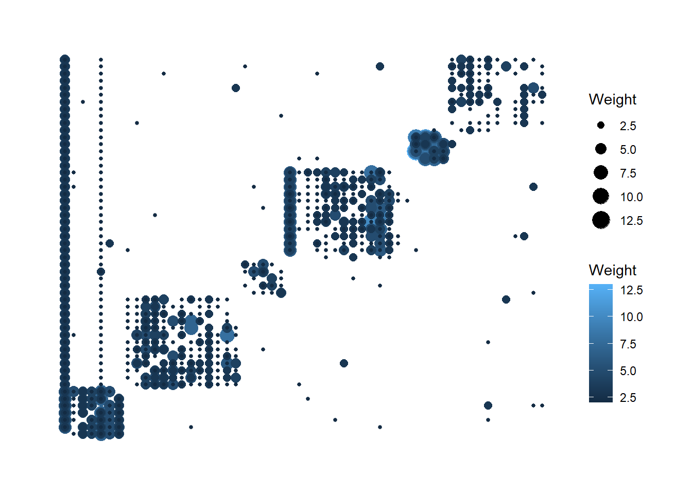
library(ggraph)
GAStech_graph %>%
activate(nodes) %>%
mutate(
community = group_infomap()
) %>%
ggraph(
layout = "matrix"
) +
geom_edge_point(
aes(size = Weight,
colour = Weight)
) +
theme_graph()The communication network exhibits distinct clusters of densely connected employees. This shows the presence of communities that interact more frequently within the group than with the rest of the organisation.
Community bubble network
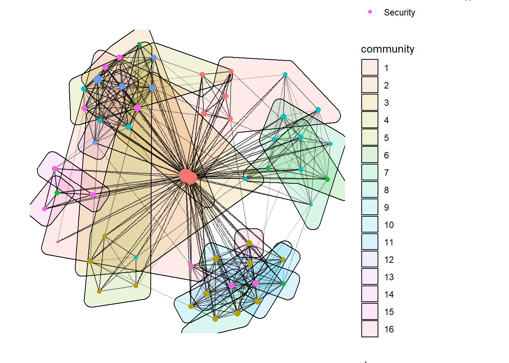
library(ggforce)
GAStech_graph %>%
activate(nodes) %>%
mutate(
community = as.factor(group_infomap()),
degree = centrality_degree()
) %>%
ggraph(layout = "fr") +
geom_mark_hull(
aes(
x = x,
y = y,
group = community,
fill = community
),
alpha = 0.15
) +
geom_edge_link(
alpha = 0.2
) +
geom_node_point(
aes(
size = degree,
colour = Department
)
) +
theme_graph()The organisation contains several distinct communication communities, but a small number of highly connected employees act as bridges linking these communities together.